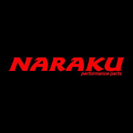
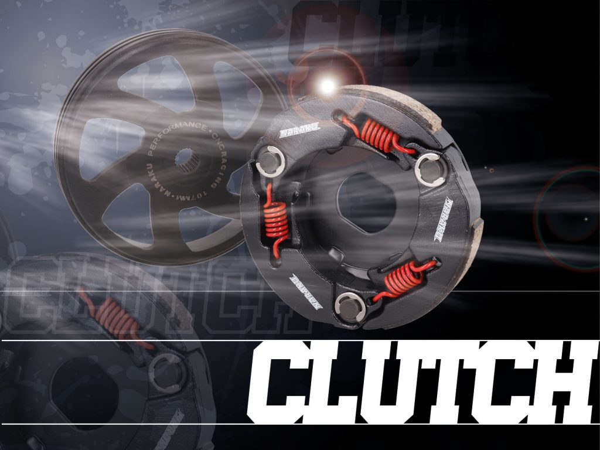
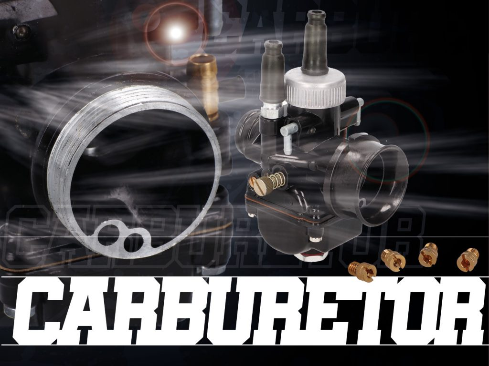
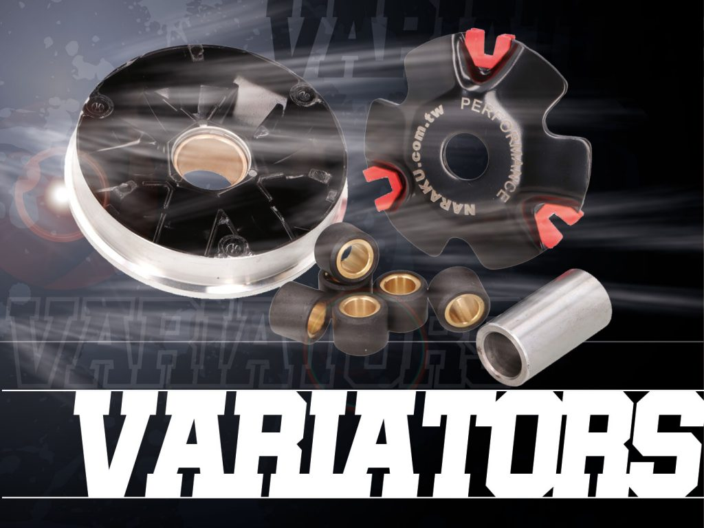
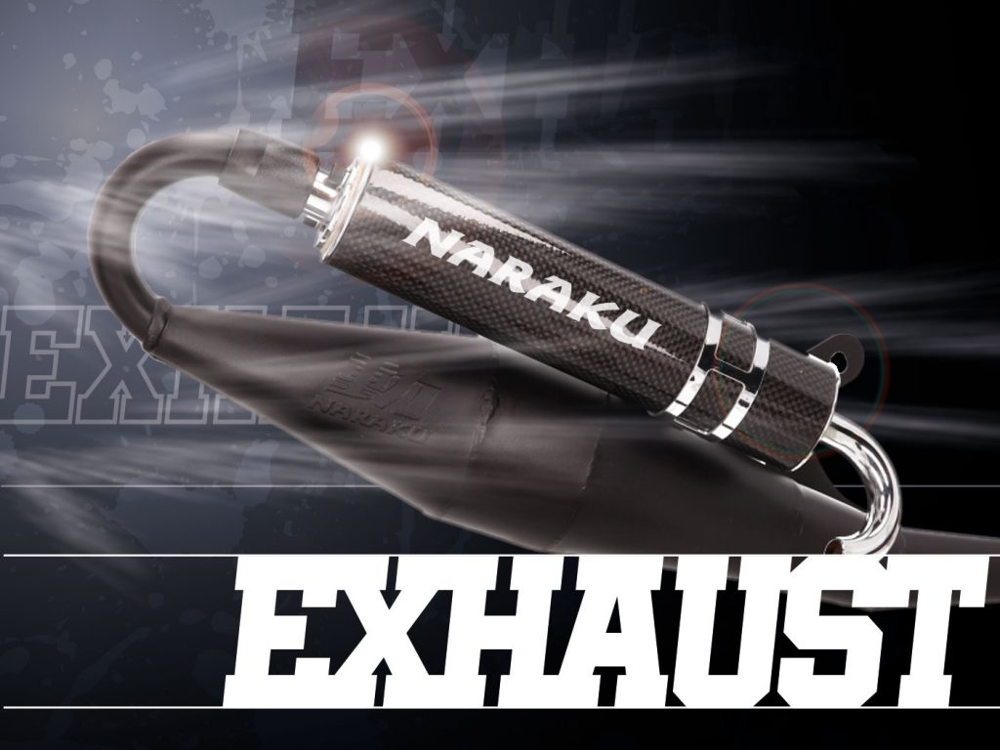
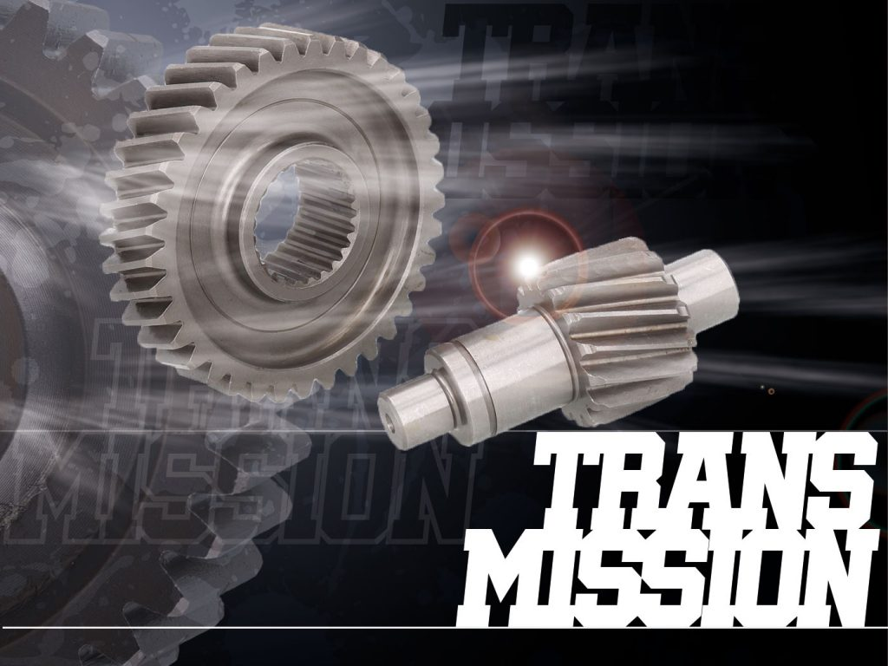

Naraku

Clutchcrucial part of the transmission provides for better power transmission $500 |
CARBURETORHIGHER SPEED! with NARAKU carbs and jets a piece of cake 😉 $750 |
Variatorsprovide for a very smooth upshiftingthe ideal gear ratio between engine and rear wheel  $500 |
EXHAUSTimproving engine power and torqueif you need a replacement or a sports exhaust, NARAKU is your choice  $999 |
TRANSMISSION PARTSUpgrading power and rev speed by tuning improves acceleration.NARAKU transmission components are described with percent rise.  $1500 |